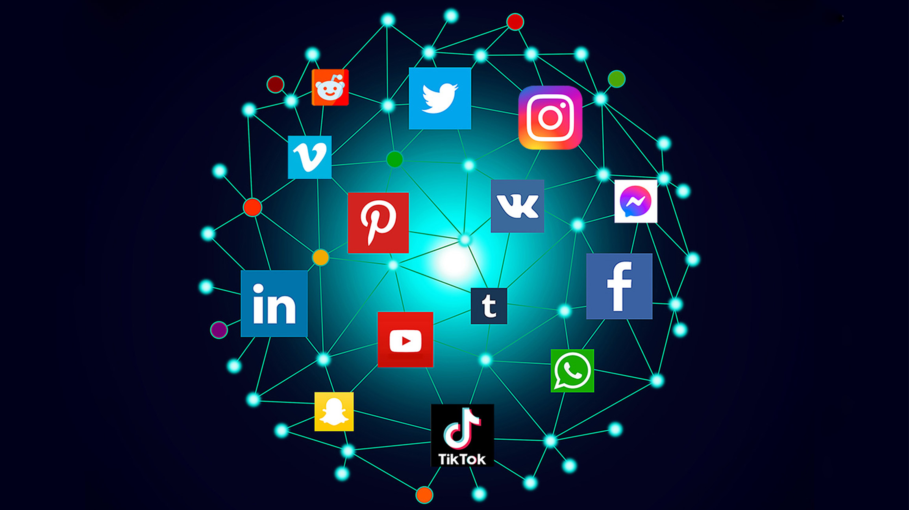

Practical Work II

| Social Media and the fear of missing out, FOMO. Throughout the years, social media usage has been rising exponentially to a point where youngsters who don't take advantage of such means are more likely to get left aside. According to Oxford dictionary, social media are websites and applications that enable users to create and share content or to participate in social networking. There are many known examples of social media nowadays since phones and other electronical devices with access to internet are world-widely spread at this point, a few of the aforementioned examples may be Facebook, Whatsapp, Instagram... On the one hand, social media has improved human lifestyle in several ways like making it easier to catch up with long distance friends or to be more aware of everything happening in the world just with a simple search. Needless to say, before social media interactions were a possibility, long distances tended to mean no contact, but with the help of media and new technological devices, it is now possible and it occurs daily that people all around the globe stay in touch. On the other hand, it's a surprise to no one, that all changes have their pros and their cons. Due to the media's high utility, it caused several addiction problems to most teenagers who can afford to spend loads of time making use of their cell-phones and stop doing healthy everyday activities to spend time staring at their phones instead. Due to this, less sport is being promoted, and statistics show disturbing information, an example of this is that an average teen spends around 7 hours and 22 minutes which equates a 43% of an average teen's waking hours. |  |
| FOMO refers to the fear of not being included in something that others are experiencing. The use of this term has grown exponentially with social media due to its close relationship. Bare in mind, people use media to share events of their life such as vacations. Due to this, all their contacts who are able to see those memories might feel a need to recreate that plan, a need that they did not have before. It also has various side-effects, one of them being the fear of being left out in a friend groups. When a plan is made in a friend group, many people feel the pressure to say yes, regardless of the plan so that they'll continue getting invited to future plans. |